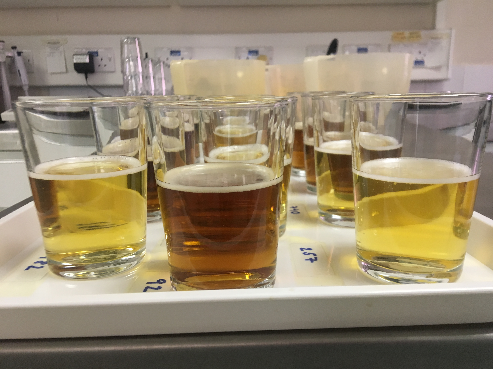
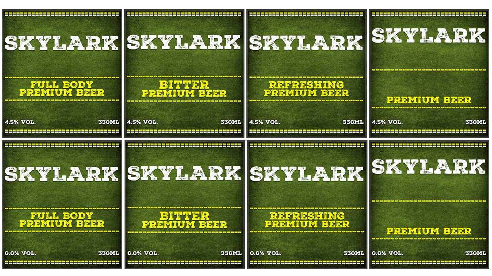
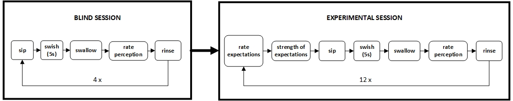

![**Results of mediation analysis ** /nThe effect of descriptors and beer colour on expected and perceived bitterness (A), refreshment (B), liking (C) and body (D). Numeric values represent estimates of the direct effect and associated credible intervals (CI). Presence of a line in the mediation model denotes a presence and a nature of the relationship between the variables. Solid:direct effect (CI excl.0), bold dashed: indirect and direct effect (both CI excl. 0), dashed: indirect effect (CI excl. 0)](images/med_all.png)
Modifying expectations may be used to improve consumers’ experience of reduced alcohol beer
click to read our article
Using mediation analysis to evaluate the role of expectations in taste and flavour perception
Helena Blackmore 1, 
@Helena_Blackmor
helena.blackmore@sussex.ac.uk
Claire Hidrio2
Martin R. Yeomans1,
1 School of Psychology, University of Sussex, Brighton, UK
2 AB InBev, Belgium
Why?
The aim of the study was to investigate and quantify the relationship between product-related cues, expectations, and sensory perception in the context of reduced-alcohol beer
How?
In a mixed design experiment, participants (n = 87) viewed label-based sensory information (“bitter,” “refershing,” “full body” and no descriptor) and tasted beer samples differing in colour (Figure 1) and alcohol content (0.0%, 4.5% ABV). Participants first rated samples without any visual cues (blind). Subsequently they examined visual cues and label-based information (see Figures 2 and 1), rated expected, and after tasting, perceived bitterness, refreshment, liking and body of beer. Samples were rated on a 0-100 VAS (see Figure 3).
To quantify the direct and indirect effect of the product cues, we used the bmlm1 R package to perform Bayesian within-subjects mediation analysis and herewe report the point estimates and associated credible intervals.

Figure 1: Beer samples presented to participants

Figure 2: Example of ficticious beer labels used in the experiments.

Figure 3: The experimental procedure in the blind and experimental tasting sessions
So what?
We were able to demonstrate that product-related cues, especially beer colour, can significantly influence consumer’s perception of taste, flavour and mouthfeel and that this effect is reliably mediated by expectations. Based on the results of the study and underlying theoretical underpinnings2,3 we conclude that altered expectations may, indeed be a good way to fine tune consumers’ experience. However we did not replicate our previous findings4 in terms of liking, perhaps suggesting that actual and labelled alcohol content are stronger predictors of liking than sensory cues such as colour or sensory descriptor. Better understanding of expectations, especially in the context of taste and flavour perception and consumer experience in general is needed.
References
1. Vuorre, M., & Bolger, N. (2018). Within-subject mediation analysis for experimental data in cognitive psychology and neuroscience. Behavior Research Methods, 50(5), 2125–2143. https://doi.org/10.3758/s13428-017-0980-9
2. Piqueras-Fiszman, B., & Spence, C. (2015). Sensory expectations based on product-extrinsic food cues: An interdisciplinary review of the empirical evidence and theoretical accounts. 40. https://doi.org/10.1016/j.foodqual.2014.09.013
3. Spence, C., & Piqueras-Fiszman, B. (2016). Food Color and Its Impact on Taste/Flavor Perception. Woodhead Publishing. https://doi.org/10.1016/B978-0-08-100350-3.00006-7
4. Blackmore, H., Hidrio, C., & Yeomans, M. R. (2021). A taste of things to come: The effect of extrinsic and intrinsic cues on perceived properties of beer mediated by expectations. Food Quality and Preference, 104326. https://doi.org/10.1016/j.foodqual.2021.104326
5. Thorne, B. (2021). Posterdown: Generate PDF conference posters using r markdown. https://github.com/brentthorne/posterdown
6. Allaire, J., Xie, Y., McPherson, J., Luraschi, J., Ushey, K., Atkins, A., Wickham, H., Cheng, J., Chang, W., & Iannone, R. (2021). Rmarkdown: Dynamic documents for r. https://CRAN.R-project.org/package=rmarkdown
7. Chamberlain, S., Zhu, H., Jahn, N., Boettiger, C., & Ram, K. (2020). Rcrossref: Client for various CrossRef ’APIs’. https://CRAN.R-project.org/package=rcrossref
8. Vuorre, M. (2019). Bmlm: Bayesian multilevel mediation. https://github.com/mvuorre/bmlm/
9. Francois, R. (2020). Bibtex: Bibtex parser. https://github.com/romainfrancois/bibtex